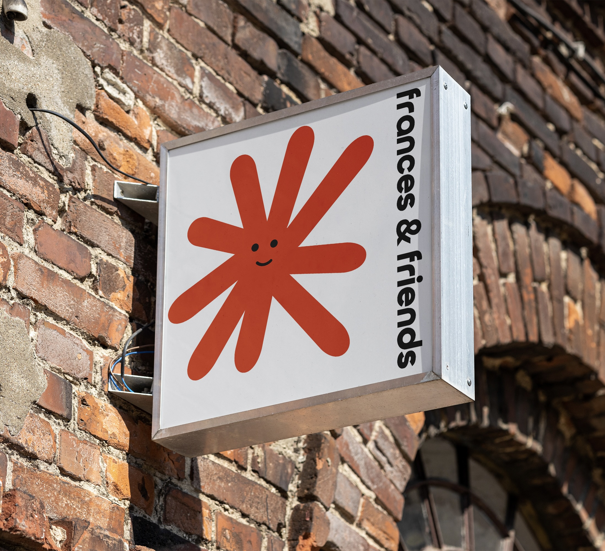
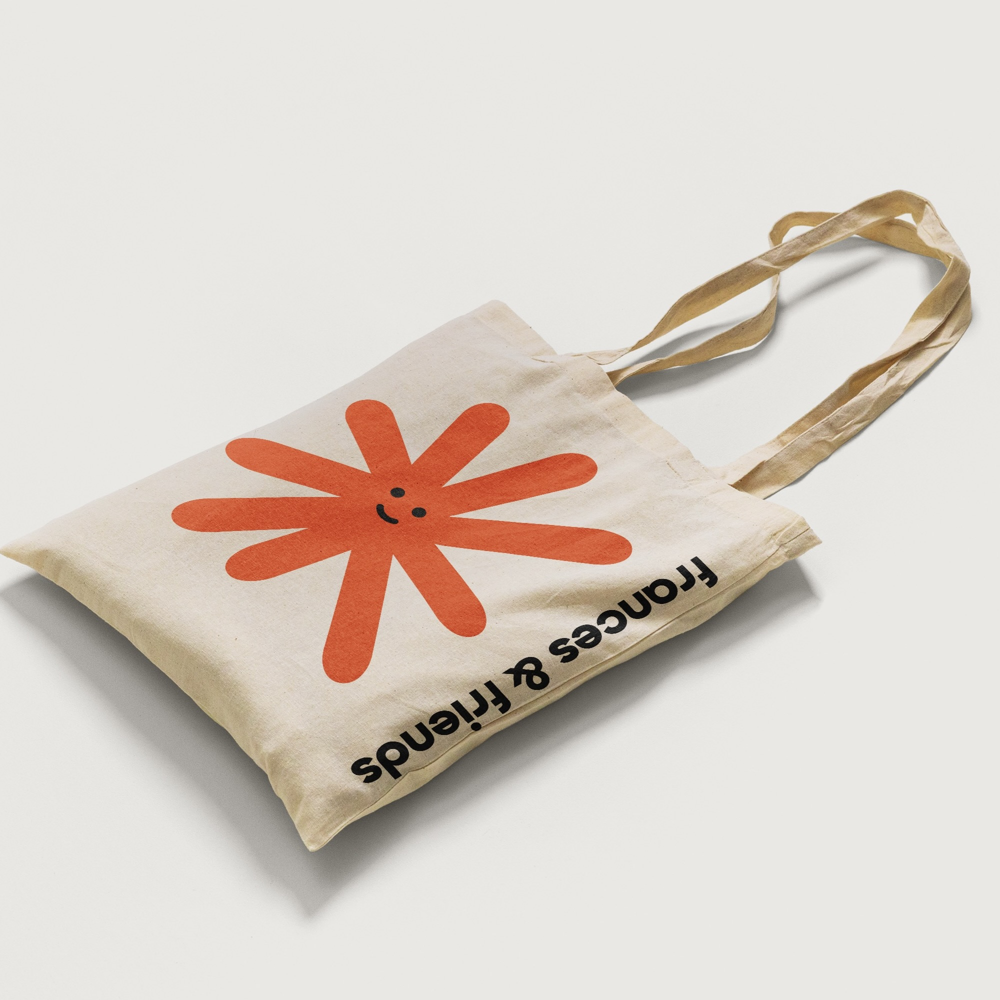
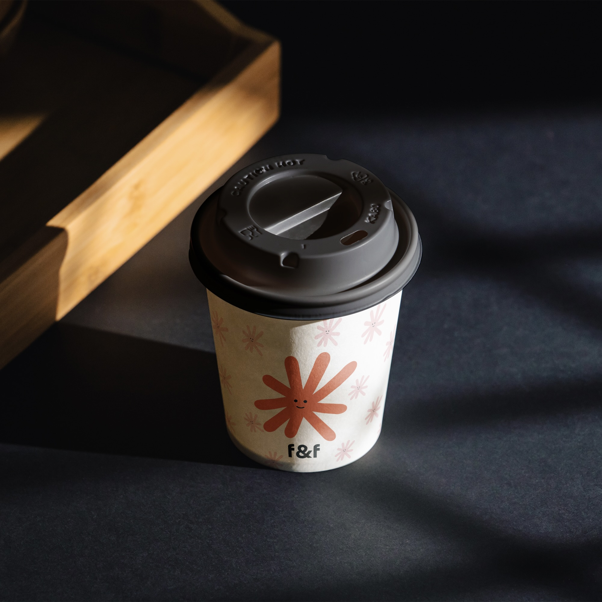
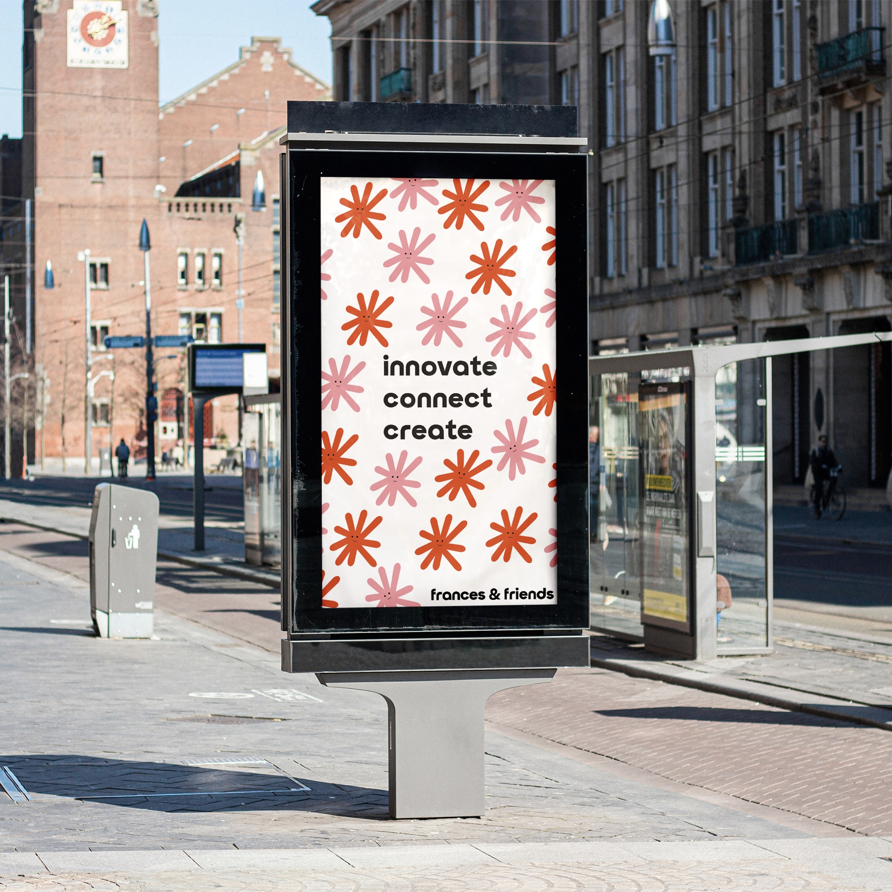
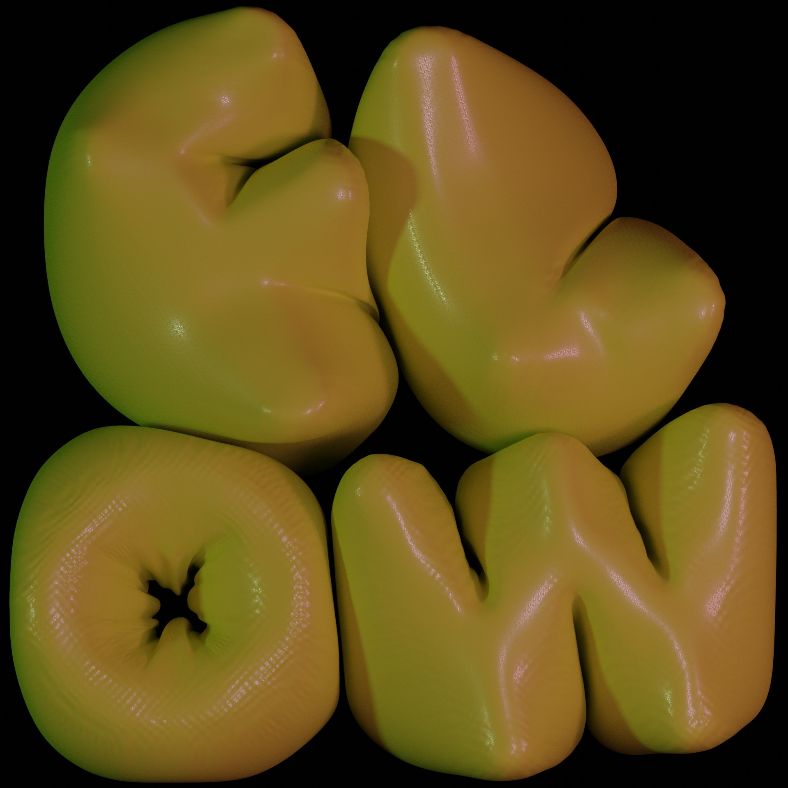
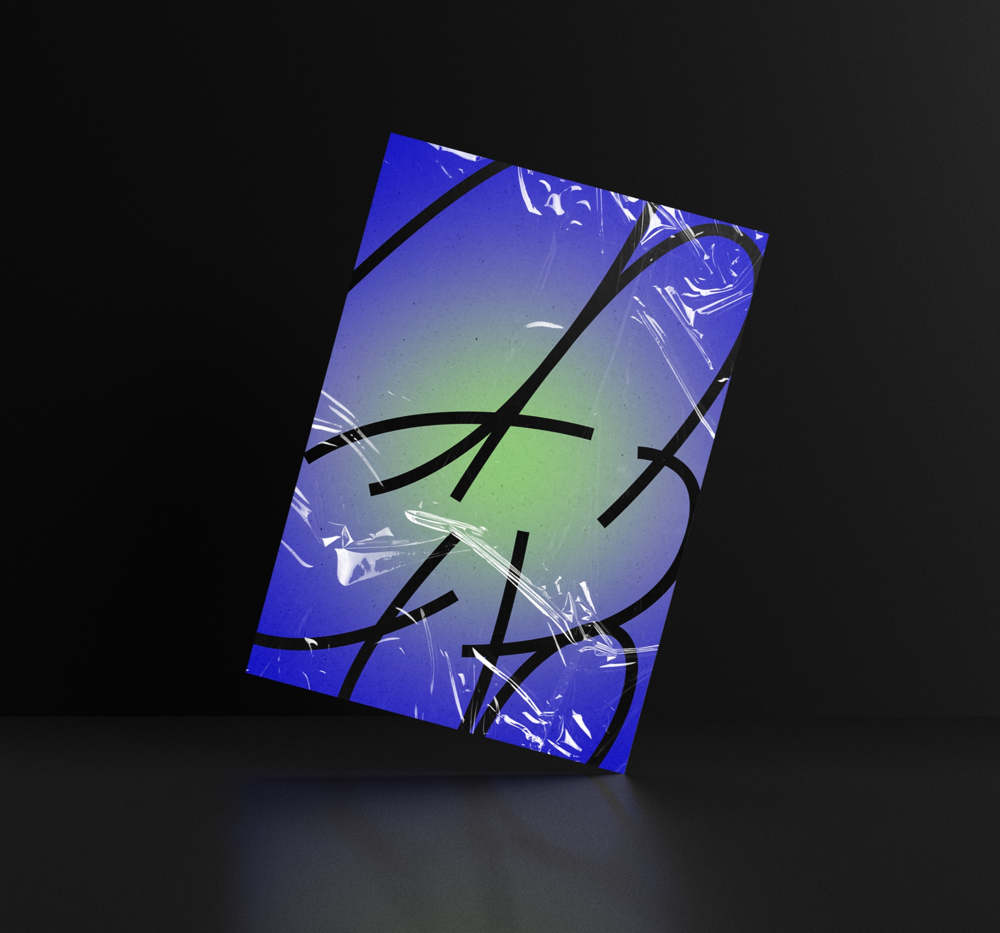
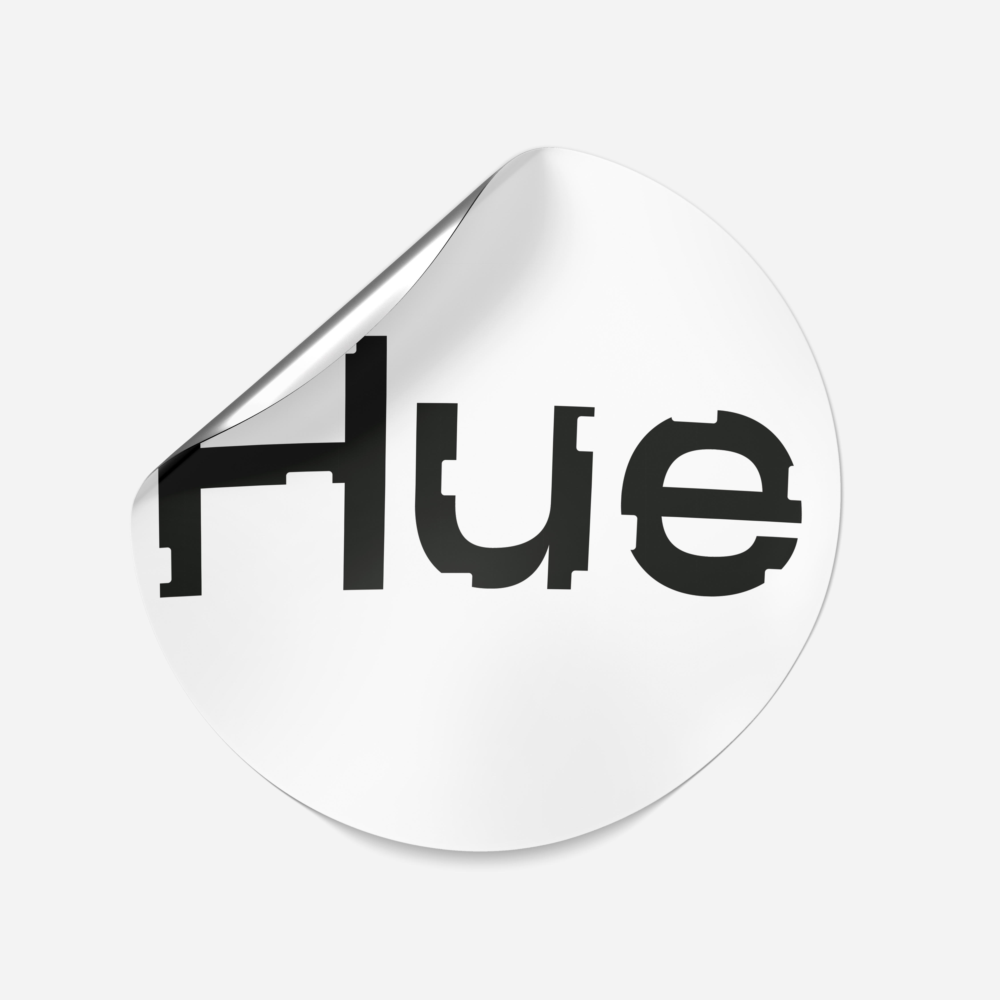

Frances and Friends is a fictional co-working space that encourages collaboration and connection. This design brief was written by @briefclub on Instagram. I was really happy with the outcome, especially the logo design, it was a very fun brief to work on. It was one of my first times involved with a brief competition.
Frances & Friends




Overhang
Overhang is a fictional online platform and creative collective specialising in showcasing women championing the outdoors. This collective would hold hiking meet ups around the UK and indoor bouldering session to allow women to socialise with others who have similar interests. Here is a logo concept and series of posters.

Flow/Llif
Is a self initiated ongoing project with the aim of creating and designing a magazine showcasing Welsh queer artists. It will be a bilingual magazine that will include artists and writers who identify as queer.


Hue Media
An freelance project with the aim of re-imagining the design of Hue Media logo. I was asked to redesign the current logo keeping it simple only using Hue as the main focus. I explored how the logo could be used widely across their social media and website.

